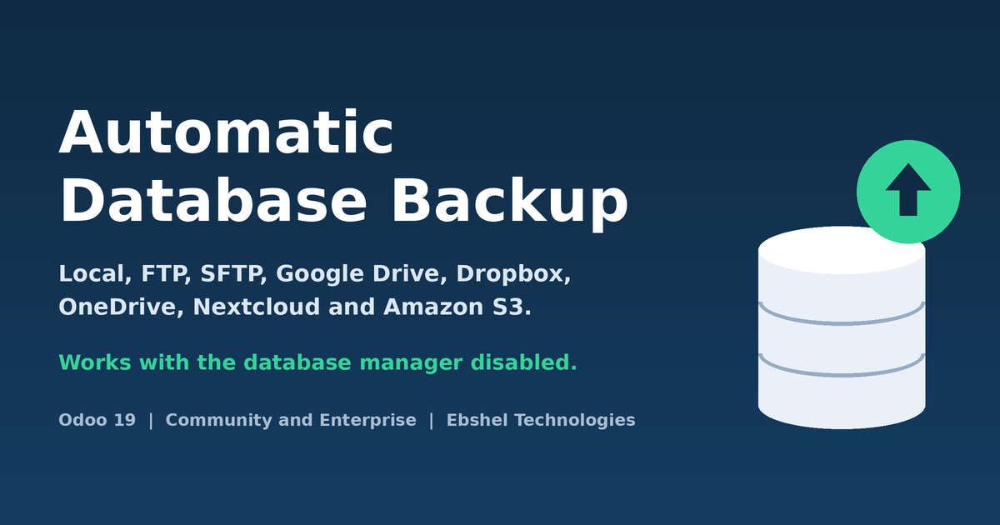
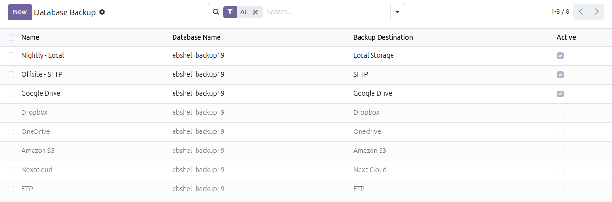
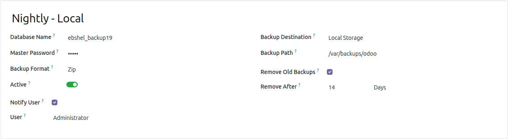
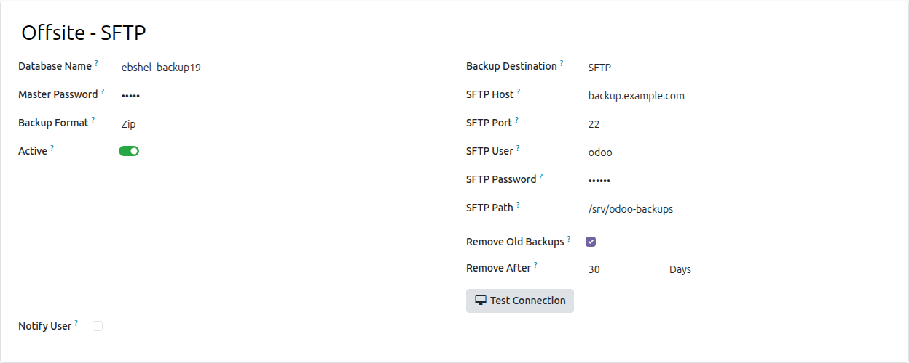
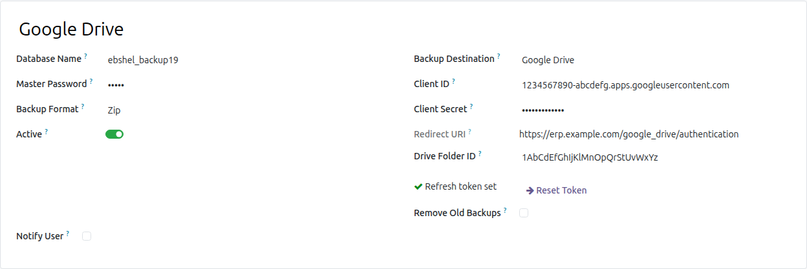
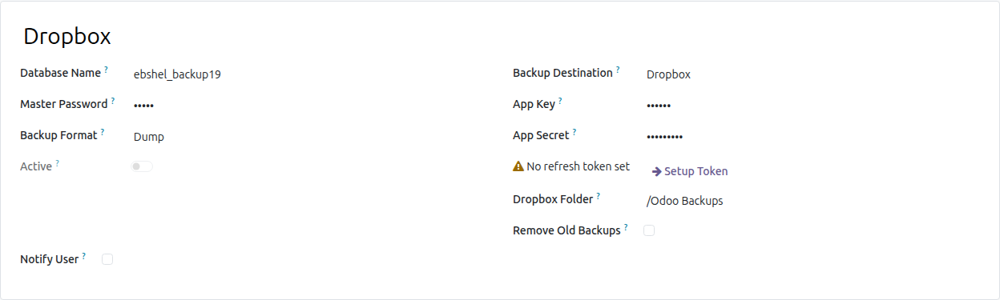
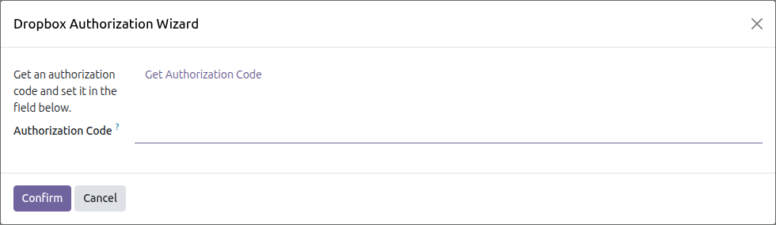
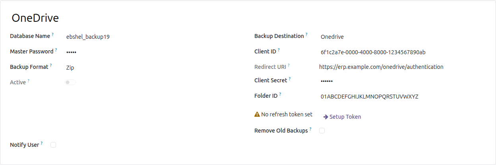
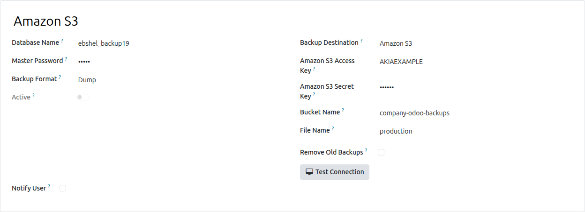
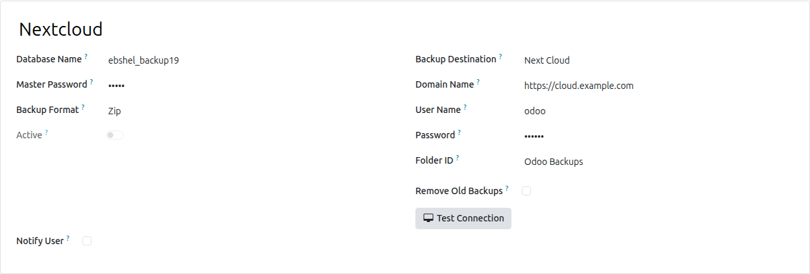

Scheduled backups of your Odoo databases, stored where you choose: on the server, on an FTP or SFTP server, in Google Drive, Dropbox, OneDrive, Nextcloud or Amazon S3. Old backups are cleaned up for you, and someone is told when a backup fails.
Backups are taken with pg_dump directly, not through the web database manager, so they keep working on hardened servers with list_db = False.
A zip backup holds the SQL dump, the filestore and the manifest, exactly as Odoo’s own database manager writes it: restore it from the database manager or with odoo-bin db load. A dump backup is a PostgreSQL custom-format file for pg_restore.
The dump is streamed to disk, never held in memory. Uploads are resumable on Google Drive, chunked on OneDrive and Dropbox, and multipart on Amazon S3, so multi-gigabyte backups go through.
“Remove old backups” deletes only this configuration’s backups of this database older than the days you set — on every destination, through every page of a large folder. Other files in the folder are never touched.
A failed backup is recorded on its configuration and e-mailed to the user you choose, and it does not stop the other configurations from running. A failed upload is reported as a failure, not as a success.
Only Settings administrators see the configurations. Dumps run only from the scheduled job, never from a remote call. Google Drive and OneDrive sign-ins return to Odoo with a signed, one-hour state that only the administrator who started them can use.
| Destination | What you enter | Python package |
| Local storage | A directory on the Odoo server (created if missing) | none |
| FTP | Host, port, user, password, folder — with a Test Connection button | none |
| SFTP | Host, port, user, password, folder — with a Test Connection button | paramiko |
| Google Drive | OAuth client ID and secret, folder ID; one click to sign in | none |
| Dropbox | App key and secret, folder; an authorisation code once | dropbox |
| OneDrive | Application (client) ID and secret, folder ID; one click to sign in | none |
| Nextcloud | Server address, user, password, folder — with a Test Connection button | pyncclient |
| Amazon S3 | Access key, secret key, bucket, optional folder — with a Test Connection button | boto3 |
A package is needed only for the destination that uses it. If it is missing, the form says which one to install instead of failing at install time.
Database Backup > Backup Configuration, an app on the home screen for administrators. Configurations that still need a sign-in or a connection test stay inactive until it succeeds.

Choose the database, zip or dump, the directory, how many days to keep, and who is told about every success and failure.

Test Connection checks the credentials and switches the configuration on.

The form shows the redirect URI to register with Google. Setup Token signs in once; the access token is refreshed automatically afterwards.

Setup Token opens a small wizard: follow the link, allow access, paste the code.


Register the redirect URI shown on the form in Microsoft Entra, then Setup Token.

Backups go to the bucket, optionally under a folder (key prefix).

The folder is created on the first backup if it does not exist.

The scheduled action Backup : Automatic Database Backup runs every active configuration once a day. Change its interval and its next execution time in Settings > Technical > Scheduled Actions. Backups are named <database>_<YYYY-MM-DD_HH-MM-SS>.zip or .dump, timestamped in UTC.
Odoo 20.0, Community or Enterprise. Depends on base and mail only.
The PostgreSQL client pg_dump on the Odoo server, at least the version of the database server (or its directory set with the pg_path option).
For SFTP, Dropbox, Nextcloud or Amazon S3, the Python package listed above.
Based on the LGPL-3 module auto_database_backup by Cybrosys Techno Solutions; ported to Odoo 20, reworked and maintained by Ebshel Technologies. License: LGPL-3.
Questions, or a destination you need? Write to us.
ebinpg777@gmail.com